Programming & Computer Science
- Introduction to Python Programming
- Intermediate Python Programming
- Python Data Science Tools
- Programming Logic and Design
- Data Structures and Algorithms (in progress)
- Database Programming
- Systems Analysis and Design
Education & technical preparation
Recent coursework in programming, mathematics, statistics, GIS, and public health complements graduate training in digital communication and professional experience with operational systems.
Graduate AI & CS preparation
Programs define preparation differently. This table separates completed coursework, current enrollment, and applied project experience so reviewers can evaluate the evidence directly.
| Area | Status | Evidence |
|---|---|---|
| Programming | Completed + applied | Introduction to Python Programming, Intermediate Python Programming, Programming Logic and Design, Python Data Science Tools, Database Programming, Programming for GIS, and applied portfolio projects. |
| Discrete Mathematics | Completed | Discrete Mathematics. |
| Linear Algebra | Completed | Applied Linear Algebra. |
| Probability & Statistics | Completed | Elementary Statistical Methods included theoretical and empirical probability, probability rules and combinatorics, random variables and distributions, confidence intervals, regression, and hypothesis testing. |
| Data Structures | In progress | Data Structures and Algorithms, current term. |
| Algorithms & Complexity | In progress | Data Structures and Algorithms, current term. |
| Data Mining | Completed | Covered within Python Data Science Tools through exploratory data analysis, feature engineering, regression, tree-based models, model tuning, ensembles, and responsible model evaluation. |
| Calculus | Completed | Calculus I and Calculus II. |
Coursework
These lists use course titles. Applied tools, methods, and research themes are presented separately below.
Applied concepts
Credentials
Computer Information Technology Python Developer Level 1
Awarded May 2025
Coursework spanning programming, data science, databases, systems analysis, GIS, mathematics, and public health.
Complete coursework archive on GitHubM.A. Interdisciplinary Studies, Interactive/Virtual/Digital Communication, 2015
B.A. Radio, Television & Film; Management minor, 2013
Also completed a Media Management Certificate. Graduate study integrated journalism, instructional technology, multimedia, and information science.
Recognition & leadership
Technical preparation matters most when it supports communication, initiative, and responsible work with other people.
Participated actively in STEM League workshops and events and served as the May 2025 commencement speaker.
Recognition & Public SpeakingLead client operations, project delivery, process improvement, budgeting, and communication while continuing to develop product-management and technical-business skills.
View professional experienceCredentials, badges & continuing education
Twelve credentials are featured for quick review. The complete collection remains available below, organized by type so formal credentials, short courses, safety training, and competency badges are not presented as interchangeable.
Pinned highlights
Professional credential
Dallas College · May 2025
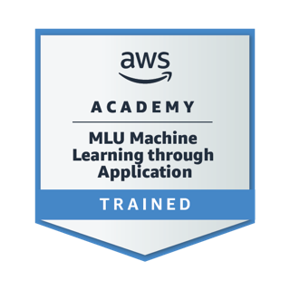
Technical training
AWS Academy · December 2024
Verify credentialTechnical training
Google · Completed
Ethics & compliance
NASBA · February 2026
Enterprise systems
LinkedIn Learning · January 2026
Professional credential
National Council for Mental Wellbeing · March 2026
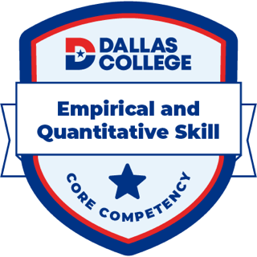
Core competency
Dallas College · December 2025
Skill competency
Dallas College · December 2025
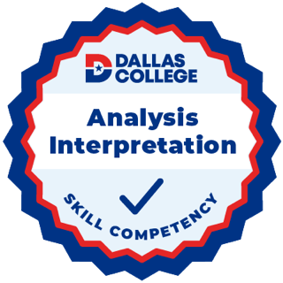
Skill competency
Dallas College · May 2025
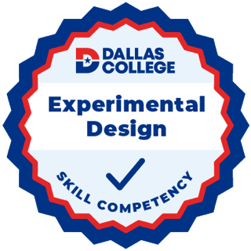
Skill competency
Dallas College · December 2025
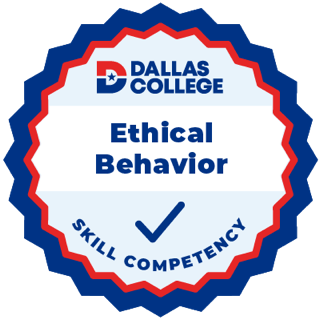
Skill competency
Dallas College · December 2025
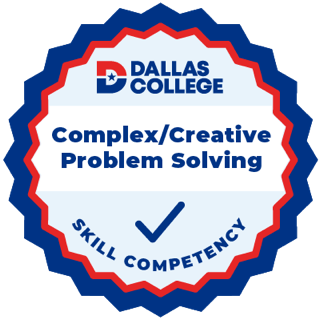
Skill competency
Dallas College · October 2025
This collection will expand as additional product-management and entrepreneurial coursework is completed.
Local display copies are shown below. The signed credential records remain private; LinkedIn provides the public verification fallback.
May 2025
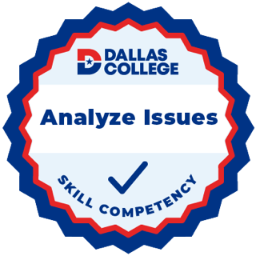
May 2025
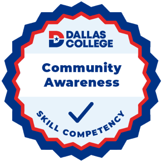
October 2025
October 2025
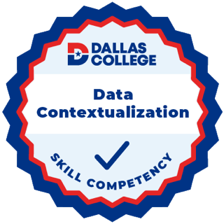
October 2025
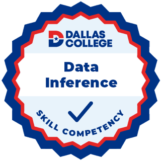
December 2025
December 2025
December 2025
December 2025
December 2025
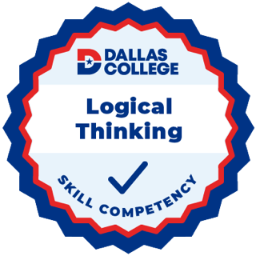
December 2025
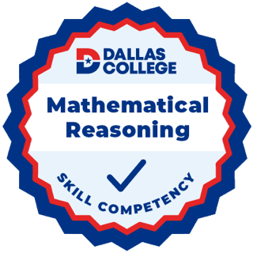
December 2025
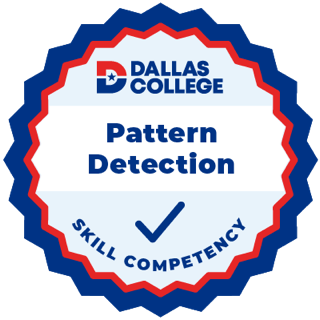
December 2025
Graduate direction
This preparation supports an interdisciplinary graduate path focused on responsible AI, data quality, public-health applications, and technically rigorous communication.
View research profile